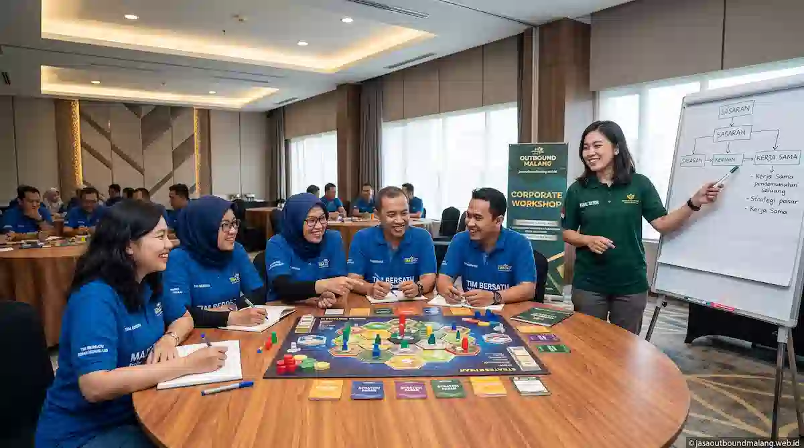

Mengapa Program Outbound Perlu Disesuaikan dengan Tujuan Tim?
Outbound yang berhasil biasanya dirancang khusus untuk menjawab kebutuhan tertentu, misalnya kekompakan tim yang menurun, komunikasi antarunit yang kurang lancar, atau kebutuhan mempererat hubungan kerja setelah melewati masa proyek yang padat.
Bila program dipilih secara acak tanpa memikirkan sasaran utama, kegiatan mungkin terasa menyenangkan di lapangan tetapi tidak memberi dampak positif yang berkelanjutan bagi organisasi. Karena itu, diskusikan tujuan utama Anda bersama penyedia jasa sejak awal agar seluruh rancangan alur permainan dan simulasi menjadi relevan.
6 Jenis Program Outbound yang Umum Ditawarkan Provider
Berikut adalah enam jenis program yang paling sering dipilih oleh instansi, perusahaan, maupun lembaga pendidikan di wilayah Malang Raya:
- Team Building: Rangkaian permainan kelompok yang melatih komunikasi, kepercayaan, serta pembagian peran dalam tim secara efektif.
- Fun Games: Permainan ringan dan kompetitif yang bertujuan mencairkan suasana (ice breaking) dan mempererat hubungan antarpeserta.
- Leadership Training: Simulasi lapangan dan studi kasus untuk melatih pengambilan keputusan, delegasi tugas, serta jiwa kepemimpinan.
- Outbound Training Pengembangan Diri: Kombinasi aktivitas fisik serta materi motivasi guna membangun ketahanan mental dan kepercayaan diri.
- Family Gathering: Kegiatan santai yang melibatkan keluarga karyawan, dilengkapi dengan variasi permainan inklusif untuk berbagai kelompok usia.
- Outbound Anak dan Pelajar: Aktivitas edukatif berbasis petualangan yang menekankan keberanian, kemandirian, dan kerja sama tim dalam pengawasan ketat.
Sebagian penyedia jasa juga menyediakan paket kombinasi, misalnya skema team building yang dilengkapi dengan sesi leadership training singkat di akhir acara.
Bagaimana Mencocokkan Jenis Program dengan Tujuan Tim?
Tabel acuan berikut dapat membantu Anda dalam menentukan arah diskusi awal saat berkonsultasi dengan penyedia jasa outbound:
| Tujuan Utama Tim | Jenis Program Cocok | Catatan & Penyesuaian |
|---|---|---|
| Meningkatkan kekompakan tim | Team Building | Sangat cocok untuk tim yang sering berhubungan lintas divisi. |
| Mencairkan suasana & penyegaran | Fun Games, Gathering | Ideal untuk acara internal dengan kapasitas peserta besar. |
| Menyiapkan calon pemimpin | Leadership Training | Sebaiknya didukung sesi refleksi mendalam bersama fasilitator. |
| Membangun kepercayaan diri | Outbound Pengembangan Diri | Tingkat tantangan disesuaikan dengan kondisi fisik umum peserta. |
| Mempererat hubungan keluarga | Family Gathering | Menyediakan variasi jenis game untuk anak-anak hingga dewasa. |
| Melatih kemandirian pelajar | Outbound Anak & Pelajar | Mengutamakan standar keselamatan dan pendampingan ekstra. |

Apa Perbedaan Program Outbound Outdoor dan Indoor?
Aktivitas outbound tidak harus selalu diselenggarakan di alam terbuka. Pilihan arena kegiatan sangat bergantung pada tujuan, anggaran, jumlah peserta, serta durasi yang tersedia:
1. Outdoor (Luar Ruangan)
Memanfaatkan area terbuka seperti lapangan rumput, hutan pinus, atau tepi pantai. Format ini lebih menantang secara fisik dan sangat cocok untuk program sehari penuh dengan banyak pos simulasi.
2. Indoor (Dalam Ruangan)
Dilakukan di dalam ruang pertemuan, ballroom, atau hall hotel. Keunggulannya adalah tidak terpengaruh perubahan cuaca hujan/panas serta sangat praktis untuk durasi kegiatan yang singkat.
3. Kombinasi (Outdoor & Indoor)
Menggabungkan sesi permainan aktif di luar ruangan pada pagi hingga siang hari, kemudian dilanjutkan dengan sesi analisis serta refleksi di dalam ruangan yang nyaman pada sore hari.
Bagaimana Jumlah Peserta dan Durasi Memengaruhi Rancangan Program?
Jumlah anggota kelompok dan alokasi waktu kegiatan secara langsung menentukan jumlah pos permainan, rasio fasilitator, hingga kedalaman materi yang dapat disampaikan:
- Jumlah Peserta: Peserta dalam skala besar umumnya akan dipecah menjadi beberapa kelompok kecil agar setiap individu dapat berpartisipasi aktif dalam setiap simulasi.
- Durasi Singkat (Half-Day): Lebih tepat dipusatkan pada permainan fun games atau pembuka acara yang berfokus pada suasana keakraban.
- Durasi Panjang (1-2 Hari): Memungkinkan kombinasi dinamis antara simulasi fisik, pemaparan materi, serta evaluasi kelompok yang lebih intensif.
- Profil & Kondisi Fisik Peserta: Rentang usia dan kondisi kesehatan anggota tim memengaruhi tingkat tantangan fisik yang aman untuk diterapkan.
Apa yang Perlu Dilakukan Setelah Kegiatan Outbound Selesai?
Dampak positif dari program outbound akan jauh lebih berdaya guna apabila diikuti oleh langkah tindak lanjut (follow-up) di lingkungan kerja:
- Adakan sesi refleksi singkat di mana peserta dapat mengungkapkan nilai dan pelajaran yang didapat dari simulasi.
- Kumpulkan umpan balik (feedback) peserta menggunakan formulir evaluasi sederhana.
- Bahas laporan penilaian dinamika kelompok dari tim fasilitator bersama jajaran pimpinan.
- Tentukan satu atau dua komitmen kebiasaan kerja baru yang ingin konsisten diterapkan setelah kegiatan.
- Bagikan dokumentasi foto dan video kegiatan sebagai pengingat momen kebersamaan tim.